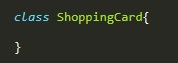
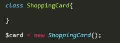
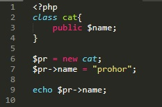
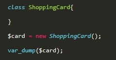
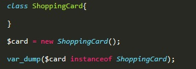
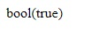

класс это основной элемент, в рамках которого осуществляется конструирование программ. Класс содержит в себе данные и код, который управляет этими данными.
пример объявления класса
Внутри класса описывают его свойства и методы. Свойства и методы класса должны иметь значение области видимости. Существует три области видимости:
Объект - своего рода копию класса, его еще называют экземпляром класса. Объект наследует от родительского класса методы и свойства у которых область видимости указана public
Пример объявление объекта:
Для объявления объекта сначала объявляют переменную в которую помещают экземпляр класса с помощью метода new
пример обращения к свойствам класса через объект
В php обращение к свойству осуществляется не как в JavaScript (объект-точка-свойство), в php вместо точки используется тире и знак большк
var_dump - выводит на экран информацию об объекте
результат

instanceof - проверяет является ли объект экземпляром заданного класса. Если да то возвращается значение true, если нет, то false
результат
